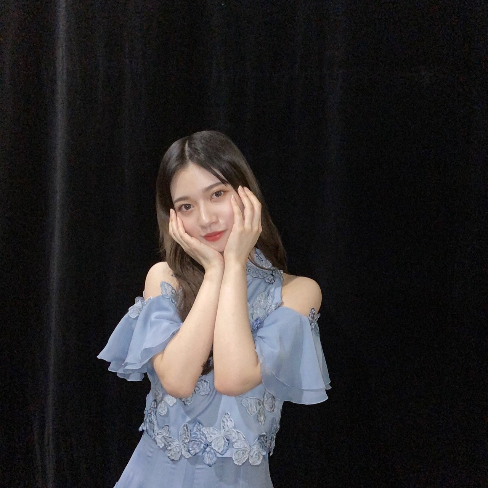

2020/1220Sun横顔
書き溜めたブログも何個かあるのですが
確認したり、写真を考えていたら
時系列ばらばらになり、、、
最近は本当にばたばたばたばたバタバタ、、、
有難いことに
そして、本日。
健康と安全第一です。
宜しくお願い致します。
自分としてはもう沢山ライブを経験して
色んな大きさの会場に立たせてもらい
色んなポジションを経験して
色んな新しい挑戦をしてきました。
だからこそ、
冷静に丁寧に正確に
生きます。✨
とにかく、声は無くても配信でも応援は届いてます。✨
なので、怪我などありませんようにと
願って応援しててください。✨
私も皆さんの事日々応援してます。✨
いってきます。✨

モノクロとカラーで。
2020/12/20 11:30


コメント(554)
たのしみ！
蘭世ちゃん！ブログ更新ありがとう！
アンダラ2日間お疲れ様！
1日目には現地で参戦して、3日目も参戦します！
1年以上ぶりに蘭世を直接見て、踊っててすごい嬉しくて一曲目のアンダーでボロボロに泣いちゃったよ、、、
本当に滑走路が好きで久しぶりに生で見れてすごい嬉しかったよ！！！
たくさん本当にファンのためにモバメもブログもいつもありがとう！
いつも笑顔と幸せたくさん貰ってるよ！
3日目も無事怪我なく蘭世が楽しく終われますように！
現地から応援してるよ！
本当に大好きです！！！
いつもありがとう！！！
あいら。
滑走路さいこうよ！！
アンダラ 頑張ってねー！
応援してます！
今年ももうあっという間に終わってっちゃうね
アンダラお疲れ様！
今日も頑張ってね( ⁎ᵕᴗᵕ⁎ )
頑張ってね！
今日、配信で見ます
楽しみだよ〜
ミーグリも無事取れたから沢山話したいです!!
蘭世ちゃん最後まで楽しんで無事に走り切ってね
今日は行けないけど配信でめっちゃ応援してるから！！
会場には足を運べませんが、画面の向こうでは応援してます
行ってらっしゃいー
頑張ってください
アンダラも中日だね〜
ライブできるのは最高に嬉しい
これからたくさんできますように…
今武道館いるよー！千秋楽楽しみだ！
蘭世のタオルと赤と白ライト、バルーン全部使い切るつもりで楽しむね！
赤白サイリウム振るよー！
頑張ってー！
今年最後のライブ精一杯楽しんで、
生きる！
がんばってね
アンダーライブ最終日ですね。初日は配信で2日目は現地で観てきましたが、想像以上に魂を揺さぶられるで、幸せに浸っております。最終日はノンストップ全曲ということで、めちゃめちゃ楽しみにしてます。蘭世も楽しんでね！
アンダラ最終日頑張ってね！
健康と安全第一で楽しんでね☺️
現地には行けへんけど配信見るよー！！
らんぜー！
大好き
久しぶりのコメントで申し訳ないー！
アンダーライブ2020 最終日！はりきっていきましょう！
何より、楽しまなきゃねー！
流行病やここのところの寒さには十分に対策しながら、素敵なライブにしてねー！そしてココロもカラダも怪我のないようにー！
おうちからの応援になるけど、らんぜちゃんいっぱい見つけたいと思いますー！！
ではでは今日も一日はりきっていこー！
また遊びに来るねー！
アンダラ千秋楽頑張ってねー。
テレビの前から応援してます～☺️
あっという間にアンダーライブ最終日ですね。
今までの色んな経験と思いを胸にステージに立つ蘭世ちゃん、
沢山沢山応援します！！
無事に終えることができますように✨
アンダーライブ2日間お疲れ様！
そして、今日は千秋楽！
3日間もあったのにあっという間だね
昨日から配信で見させていただいてます
久々のアンダーライブで見てるこっちもとても熱くなりました
最終日も見させていただきます！
最後の最後まで楽しんで！
俺も画面越しに声援送りまくります！
AKB初代チームBの精神ですね(^^)！
僕は配信での参加になりますが、LIVE楽しみにいています！
怪我などないように楽しんでください、応援しています！！
今日のアンダーライブ最終日、健康第一安全第一で頑張ってください！この2日間は僕も久しぶりのアンダーライブで、あの雰囲気を配信ではありますが感じることができて本当に楽しかったし、幸せでした！なんといっても蘭世さんのセンター曲での蘭世さんの表情や踊りなど、本当に圧巻でした！誰よりも輝いていました！
MCやアフター配信での楽しそうな姿もこっちも見てて楽しかったです！今日が最終日ですが、最後まで全員で無事に駆け抜けてほしいです！配信ですが想いよ届けー！って感じで応援してますし、僕も楽しもうと思います！
蘭世さん大好きぴです！
アンダーライブついに最終日ですね。
ありがたいことにたまたま時間が会い、初日、2日目、そして今日も配信ではありますが見れそうです！
本当は実際に会場に行ってその場の雰囲気だったり全国各地にある友達と話したりご飯食べに行ったりしたかったけどこんなご時世だからね。
我慢して家で見てきます。
が、終わった瞬間いろんな友達と熱く話したりしてます。
なかなか会えなくなってしまったけど気持ちは変わってないんだなーて。自分自身もかなり熱くなってます。
僕はアンダーライブが好きだし、アンダーメンバーが好きだしアンダー曲がすごく好きです。
どの曲をとってもいろんな思い出があるし、その時、その場によって表現の仕方が変わったり見え方が違かったりと...
とにかく大好きなんです。
いつかは今の状況が落ち着いて大きな声で声援を送ったりできる日が来ればいいなって思ってます。
今日の千秋楽も楽しみにしてます！
久々に笑顔な蘭世さん見れて嬉しかったよ！！！
体調や、怪我に気をつけてね！
遠いところから応援してます！！
蘭世さん大好きだよ！！！
アンダラ2日目会場にお邪魔しました。
1日目は配信で見ました。
感染症対処がバッチリされているなと思いました。
今回は声が出せない状況下でのライブだったので
声が出せなかったのは少し悲しかったですが、
スティックバルーンを使った新しいライブも楽しかったです！！
しかも2日目は蘭世がセンターを務めるアンダーの曲3つ全部やってくれて蘭世推しはとしてはとても嬉しかったです。
その女はまだ会場で直接聞いたことがなかったのでとても嬉しかったです！
ありがとう！
アフター配信もサンタコスでめちゃくちゃ可愛かったです。
今日ラストは家で配信で見ます。
30曲ノンストップは大変だと思うけど
あの14人なら心配はいらないと思います。
全力で楽しんでください！！！！
いつもありがとう！
良いお年を！まだ早いか？？？
ユースケ
昨日のお返事。「蘭世の事大好きよーーーー」
今日は最終日だね、ノンストップ頑張れ！
僕もお家で楽しみます！！！！
またアンダラ見たら送るね！ じんす
想いを素直に伝えてくれること、とても暖かくて励まされます。お互いを想ってくれてるからこそ僕も頑張らなきゃと思います。
こんな時期だけど、気持ちは届いてると信じてます！
最終日、盛り上げていこう！
頑張れー！！
オレンジ
DAImonです(^^ゞ
行ってらっしゃい‼
今日もお家から蘭世とみんなの安全と、無事にアンダラが完走できるように祈ってます(￣人￣)
そして最終日、めちゃめちゃ楽しむぞ～(o≧▽゜)o
蘭世頑張れ～p(^^)q
蘭世なら出来る(o⌒∇⌒o)
やっぱ乃木坂はライブやってなんぼ！
特にアンダラの魂こもったパワーときたら
いろんなモヤモヤや不安も一気に吹き飛ばしてくれます(^^)
いつもありがとう！
さ、今日も元気に健康に
そして安全第一で！
いってらっしゃい٩( 'ω' )و
アンダーライブIN日本武道館、大きな事故やメンバーの体調不良などなく、無事に千穐楽を迎えられること嬉しく思います。私は少し大学関係の物が忙しくて配信も見れず終いでしたが、TwitterなどSNSを通じて今回のアンダラは前とは少し違った新しいアンダラなんだなーと感じています。今後はライブで会場が埋まるようになればいいのですが、それを願いつつ今日の千穐楽も頑張ってください！遠い地から応援しております。
アンダーライブ3日目、みんなで成功させましょう！
声は出せなくても蘭世ちゃんを応援する気持ちを精一杯伝えるよー！
蘭世ちゃん大好きです。またね:-)
いよいよ最終日ですな。
頑張って♪北海道から配信観て応援してます。
ほんとは会場で赤×白サイリウム振りたかったけど( ＴДＴ)ごめんなさいね。
滑走路今日も楽しみにしてます♪
昨日のブランコもやっぱ何度聴いても良き！
昨日のMCでたまちゃんの「明日、明後日の～」で明後日ないよーと思ってましたが、ちゃんとらんらん訂正してくれるあたり冷静に丁寧に正確にでしたねw
ブログ更新ありがとう！
残すは今日だけだね
昨日も配信で見てたけど、滑走路、その女、ブランコと、蘭世のアンダーセンター曲全部披露してくれてすごく嬉しかったし楽しかった！
アフター配信のプレゼント交換会も面白かったよ
蘭世のオシャレなエコバッグはすごくいいプレゼントだと思う！
エコバッグなんて自分で買おうと思ったら絶対お高いのなんて買わないから、そういうのをプレゼントするのはすごくいいよね
絢音ちゃんからの本のプレゼントも素敵だったね！
インスタでの投稿楽しみにしてるね！
そして今日はアンダー曲全曲ノンストップライブ！
これを今日生で見れるのが凄く嬉しい！
赤白サイリウム振ったり蘭世のタオル掲げたりして応援してるね！
最終日ファイトー！
写真もありがとう！
じゃあまた！
今日が最終日ですね！
2日間お疲れ様でした。今日も楽しん出くださいね！
今日がアンダラ最終日ですね！
自分は現地には行けないので配信を観ます！
蘭世がんばれーーー！！
がんばれー！
昨日アンダラ行きました！！！
久しぶりに近くで拝めて楽しかったし嬉しかったです！
また握手会でお話ししたいなぁ
ずっと応援してます！！！
最後まで怪我のないように
アンダラ走り抜けてください☺️
現地には行けないけど、もちろん応援してるよーーーー
大好きなシンクロの衣装、素敵、、、
ライブ行ってらっしゃい！！
楽しんでね
ゆうき（ゆっちゃん）
コメントする